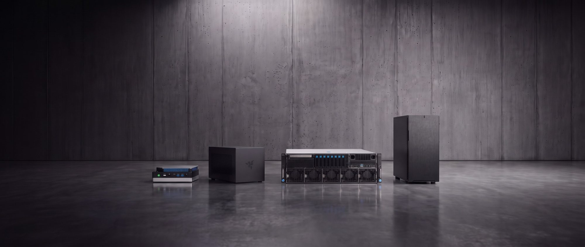

Ihr AI Brain auf dem Gerät, das zu Ihrem Team passt.
Alles greift ineinander.
Der Indie Solutions Stack bringt Ihr AI Brain, Apps, Agenten und Daten auf einem Gerät in Ihrem Büro zusammen. Wählen Sie das Gerät, das zu Ihrem Team passt, die Software ist immer dieselbe. Klicken Sie auf eine Ebene, um zu sehen, was sie leistet.
Indie Suite Software
Plattform
Basis
Geräte
Indie Suite Software
AI Brain
Alles, was Ihr Unternehmen weiß, eine Frage entfernt. Es verbindet Laufwerke, E-Mail, Wikis und Fachsysteme, und zu jeder Antwort gibt es die Quelle.
Ihre Quellen bleiben, wo sie sind
Nichts wird umkopiert, und niemand muss seine Arbeitsweise ändern.
Immer mit Quelle
Jede Antwort nennt das Dokument und die Textstelle. Was nicht in Ihren Quellen steht, behauptet das AI Brain auch nicht.
Aufgeräumt vom Curator
Alte Versionen, Dubletten und Widersprüche werden zu klaren Artikeln verdichtet, mit Links zu den Originalen.

Indie Suite Software
AI Agent Command Center
Ihre eigenen Apps und KI-Agenten in einem Dashboard. Beschreiben Sie eine Aufgabe, und ein Agent erledigt sie mit Ihren freigegebenen Daten.
Eigene Apps für Ihr Team
Wir bauen Apps rund um die Arbeitsweise Ihres Teams, etwa eine Projekt-Roadmap oder einen Design-Simulator. Sie brauchen noch eine? Fragen Sie den Agenten, und er baut sie.
Ein Agent für jede App
Jede App hat einen eigenen Agenten, der Ihre Daten kennt. Neue Agenten starten Sie, wann immer Sie sie brauchen, jeweils passend für ihre Aufgabe.
Apps, die aktuell bleiben
Jede App, die ein Agent baut, bleibt in Ihrem Dashboard und zeigt immer die neuesten freigegebenen Daten. So können Sie jederzeit darauf zurückgreifen.
Sie behalten den Überblick
Prüfen und korrigieren Sie Zwischenergebnisse und geben Sie jeden Schritt frei, bevor etwas endgültig ist.
Mit den richtigen Leuten geteilt
Sie legen fest, wer welche App und welchen Agenten nutzen darf. Kolleginnen und Kollegen sehen nur, wofür sie freigeschaltet sind.

Indie Suite Software
Agent Studio
Ein geschützter Bereich für jedes Team, mit eigenem Wissen und eigenen Regeln.
Bereiche und Wissensquellen
Jedes Team bekommt einen eigenen Bereich. Sie entscheiden, welche Dokumente, Datenbanken und Ablagen es sehen darf, und können das jederzeit prüfen.
Regeln für jeden Bereich
Jeder Bereich legt fest, welche Quellen seine Agenten nutzen dürfen, was sie tun dürfen und wo ein Mensch zustimmen muss.
Ein Gerät für alle Teams
Personalabteilung und Produktentwicklung arbeiten auf demselben Gerät, ohne die Daten der jeweils anderen zu sehen.
Plattform
Integrationen und API
Das AI Brain verbindet sich mit den Systemen, die Ihr Unternehmen schon nutzt, und Ihre Apps und Agenten können Ihre eigenen Tools verwenden.
Passt zu dem, was Sie haben
Gemeinsame Laufwerke, E-Mail und GitLab werden dort angebunden, wo sie schon liegen. Fileserver, Netzlaufwerke und weitere Systeme wie SharePoint, Teams, Confluence, Notion, SAP, Salesforce und HubSpot lassen sich auf Anfrage anbinden.
Eigene APIs und MCP-Server
Apps und Agenten können Ihre eigenen APIs und entfernte MCP-Server aufrufen, im Chat genauso wie in Agenten.
Funktioniert auch mit Ihrer bisherigen KI
Das AI Brain arbeitet mit eigenen lokalen Modellen. Nutzt Ihr Team bereits ChatGPT, Claude oder Copilot, können Sie diese zusätzlich verbinden, damit sie mit Ihrem Firmenwissen antworten. Über Zugriffsrechte legen Sie fest, was jedes Tool sehen darf.
Auf eine Adresse festgelegt
Jeder Connector ist an eine feste Adresse gebunden, die Apps und Agenten nicht ändern können.
Neue Fähigkeiten für Ihre Agenten
Bringen Sie Agenten eine Fähigkeit bei, etwa ein PDF zusammenzufassen, und sie nutzen sie nur, wenn es passt.

Plattform
Orchestrierung und Workflows
Agenten übernehmen wiederkehrende Arbeit und laufen im Hintergrund weiter, nach einem Zeitplan, den Sie festlegen.
Routinen nach Zeitplan
Geben Sie einem Agenten eine Routine, etwa jeden Montag eine Übersicht offener Angebote, und er erledigt sie in diesem Rhythmus auf Ihrem eigenen Server, auch wenn niemand angemeldet ist.
Als Chat oder als Agent
Eine Routine kann in ihren eigenen Chat antworten oder einen vollständigen Agentendurchlauf mit Arbeitsbereich und Tools starten.
Sehen, was läuft
Agenten mit einer Routine oder einem laufenden Dienst wandern in den Tab Hintergrund. So sehen Sie auf einen Blick, was selbstständig arbeitet.
Jederzeit pausieren
Pausieren Sie eine Routine oder stoppen Sie einen Dienst, und der Agent wandert zurück in den Vordergrund.

Plattform
Modellverwaltung
Sie entscheiden, welches KI-Modell antwortet, und können jederzeit wechseln.
Standard festlegen
Legen Sie fest, mit welchem Modell jeder neue Chat startet, etwa Qwen 3.8 27B auf Ihrem eigenen Gerät. Gewechselt wird jederzeit in der Chat-Leiste.
Eigenen Endpunkt anbinden
Binden Sie eine beliebige OpenAI-kompatible API an. Sie erscheint als Custom neben Ihren lokalen Modellen, und der Schlüssel bleibt in Ihrem Browser.
Offene Modelle hinzufügen
Fügen Sie offene Modelle auf Ihrem Gerät hinzu oder entfernen Sie sie, wann immer Sie möchten.
In der Hand Ihrer Administratoren
Nur Ihre Administratoren können Modelle installieren, und jedes lässt sich anhand seiner veröffentlichten Prüfsumme kontrollieren.

Plattform
Daten und Wissen
Ihr Team und Ihre Agenten arbeiten mit einer Wissensbasis, die an einem Ort auf Ihrem Gerät liegt.
Eine Wissensbasis, mit klaren Regeln
Jede angebundene Quelle fließt ins AI Brain. Ihr Team und Ihre Agenten sehen jeweils nur das Wissen, für das sie freigeschaltet sind.
Privat, bis es geteilt wird
Was jemand erstellt, bleibt privat, bis er es mit dem Team teilt.
Einfach zu sichern
Alle Daten liegen an einer zentralen Stelle auf Ihrem Gerät und passen so in Ihre bestehende Datensicherung.
Plattform
Sicherheit und Governance
Das System selbst regelt, wer was sieht und was jeder Agent darf.
Zugriff pro Agent
Für jedes Wiki legen Sie fest, welche Agenten es lesen dürfen und welcher es pflegt. Nur ein Admin kann ändern, wer das gemeinsame Wiki pflegt.
Persönliche Daten herausgefiltert
Ein Datenschutzfilter kann E-Mail-Adressen, Telefonnummern und Geheimnisse durch Platzhalter ersetzen, bevor eine Anfrage das Modell erreicht.
Ein abgeschotteter Raum für jeden Agenten
Jede App und jeder Agent läuft in einem eigenen geschlossenen Bereich, ohne Internet, solange Sie es nicht erlauben.
Zugriff pro Person
Jede Person hat ein eigenes Konto, und jedes Team sieht nur die Bereiche, für die es freigeschaltet ist. Die Anmeldung mit Ihrem Firmen-Login gibt es als Zusatzoption.
Bleibt bei Ihnen
Das Gerät sendet nichts an uns zurück, und Ihre Daten werden nie zum Training von KI verwendet.

Basis
Geräte-Dashboard
Eine Startseite für Ihr Gerät. Sie sehen auf einen Blick, dass alles läuft, und kümmern sich mit wenigen Klicks darum.
Alles auf einen Blick
Apps, Updates, Dienste und Modelle, jeweils mit klarem Status.
Apps und Modelle
Apps installieren und KI-Modelle hinzufügen oder entfernen.
Netzwerk und sicherer Zugriff
Verbindung prüfen und HTTPS einrichten.
Speicher und Backups
Freier Speicher, das letzte Backup und Ihre Wiederherstellungspunkte.
Hardware, live
Prozessor, Arbeitsspeicher, GPU und Temperatur im Moment.

Geräte
indie.box
Für kleine Teams. Ein kompakter KI-Server für Ihr Büro.

- Rechenleistung
- AMD Ryzen AI Max 395, 16 Kerne, NPU mit 50 TOPS
- Arbeitsspeicher
- 128 GB schneller RAM, gemeinsam genutzt
- Speicher
- 2 TB NVMe SSD
- KI-Modelle
- Führt große offene KI-Modelle aus, etwa Llama 4 Scout. Modelle bis zur 400B-Klasse, etwa Llama 4 Maverick, laufen in komprimierter Form. Modelle jederzeit hinzufügen oder entfernen
- Anschluss
- Ethernet oder WLAN mit Einrichtungsassistent, Zugriff im Browser über HTTPS
- Benutzeranmeldung
- Eigene Benutzerkonten. Firmen-Login (SSO oder LDAP) als Zusatzoption
- Offline-Betrieb
- Läuft bei Bedarf komplett offline
- Erweiterung
- Jederzeit um einen indie.booster für schnellere Antworten erweiterbar
- Software
- AI Brain, AI Agent Command Center und Agent Studio, vorinstalliert
Geräte
indie.booster
Für kleine Teams, die schneller Antworten wollen. Ein zweites Gerät, das Ihrer indie.box zusätzliche Leistung bringt.

- Rechenleistung
- NVIDIA RTX 5090
- Arbeitsspeicher
- 32 GB eigener GPU-Speicher. Die indie.box behält ihre 128 GB
- Speicher
- Nutzt den Speicher der indie.box
- KI-Modelle
- Führt dieselben Modelle aus wie die indie.box, bis zur 400B-Klasse, mit schnelleren Antworten
- Anschluss
- Wird an die indie.box angeschlossen
- Benutzeranmeldung
- Nutzt die Konten der indie.box
- Offline-Betrieb
- Läuft bei Bedarf komplett offline
- Erweiterung
- Passt an jede indie.box, auch an bereits genutzte. Nicht für die indie.workstation
- Software
- Betreibt die Software auf der indie.box
Geräte
indie.workstation
Für Teams, die den ganzen Tag mit KI arbeiten. Bleibt auch dann schnell, wenn viele gleichzeitig damit arbeiten.

- Rechenleistung
- NVIDIA RTX 5090, fest verbaut
- Arbeitsspeicher
- 64 GB RAM, auf Tempo ausgelegt
- Speicher
- Erweiterbar um 2 × 2 TB, gegen Aufpreis
- KI-Modelle
- Schnelle Antworten mit kleineren KI-Modellen, bis etwa zur 35B-Klasse. Die größten Modelle laufen darauf nicht
- Anschluss
- Zugriff im Browser im lokalen Netz, Netzwerk und HTTPS werden in der Admin-Oberfläche eingerichtet
- Benutzeranmeldung
- Eigene Benutzerkonten. Firmen-Login (SSO oder LDAP) als Zusatzoption
- Offline-Betrieb
- Läuft bei Bedarf komplett offline
- Erweiterung
- Zweite GPU oder mehr Speicher gegen Aufpreis. Nicht mit dem indie.booster kombinierbar
- Software
- AI Brain, AI Agent Command Center und Agent Studio, vorinstalliert
Geräte
indie.rack
Für große Organisationen. Server, ausgelegt auf die Zahl der Menschen, die damit arbeiten, von 100 bis über 1.000.

- Rechenleistung
- Passend zu Ihren Nutzern und Ihrer Auslastung
- Arbeitsspeicher
- Abgestimmt auf Ihre Auslastung
- Speicher
- Geplant nach Datenmenge und Aufbewahrungsregeln
- KI-Modelle
- Führt die größten offenen KI-Modelle aus, ab der 400B-Klasse aufwärts, für Hunderte Menschen gleichzeitig
- Anschluss
- Fügt sich in Ihre Netzwerk- und Sicherheitsrichtlinien ein. Fernzugriff nur, wenn Sie ihn einschalten, etwa per VPN
- Benutzeranmeldung
- Eigene Benutzerkonten. Firmen-Login (SSO oder LDAP) als Zusatzoption
- Offline-Betrieb
- Läuft bei Bedarf komplett offline, nach gesonderter Vereinbarung
- Erweiterung
- Wächst mit Ihrer Organisation, gemeinsam mit Ihnen geplant. Die Redundanz richtet sich danach, wie geschäftskritisch der Einsatz ist
- Software
- AI Brain, AI Agent Command Center und Agent Studio, vorinstalliert
Lokale KI oder Cloud-KI?
Das AI Brain ist eine private KI-Wissensbasis, die auf einem lokalen KI-Server in Ihrem Büro läuft. Ihr Team stellt Fragen in normaler Sprache, genau wie bei ChatGPT oder Microsoft Copilot. Der Unterschied liegt darin, wo es läuft und wer die Kontrolle über Ihre Daten hat.
Cloud-Tools unterscheiden sich je nach Tarif und Einstellungen. Der Vergleich beschreibt das typische Setup.
Häufig gestellte
Fragen.
Ist das eine Alternative zu ChatGPT oder Microsoft Copilot?
Ja, für Unternehmen, die ihre Daten im Haus behalten wollen. Ihr Team stellt Fragen in normaler Sprache wie bei ChatGPT oder Copilot, aber die KI läuft lokal auf Ihrem eigenen Gerät, arbeitet mit Ihrem Firmenwissen und ist so eingerichtet, dass sie die Anforderungen der DSGVO erfüllt.
Was ist On-Premise-KI?
On-Premise-KI läuft auf Hardware in Ihrem eigenen Gebäude statt in der Cloud eines Anbieters. Bei indie.solutions ist das eines von vier Geräten, von der kompakten indie.box bis zum indie.rack, jeweils mit AI Brain, AI Agent Command Center und Agent Studio vorinstalliert.
Mit welchem Gerät sollten wir anfangen?
Die meisten Teams starten mit dem Paket Essential und der indie.box. Wenn Ihre Leute bei der Arbeit oft auf Antworten warten, etwa beim Programmieren, passt die indie.workstation besser. Ab 100 Nutzern ist das indie.rack die richtige Wahl.
Ist die Software auf jedem Gerät gleich?
Ja. Auf jedem Gerät läuft dieselbe Software. Ihre Apps und Agenten funktionieren also weiter, wenn Sie Geräte ergänzen oder wechseln.
Ist die Software im Preis enthalten?
Ja. AI Brain, AI Agent Command Center und Agent Studio sind auf jedem Gerät vorinstalliert, und jedes Paket enthält zwölf Monate AI Brain sowie Updates, Support und Geräteaustausch. Danach wählen Sie monatliche Tarife, pro Gerät und für beliebig viele Nutzer.
Funktioniert es ohne Internetverbindung?
Ja. Die Geräte können komplett offline laufen.
Wer hat Zugriff auf unsere Daten?
Nur die Personen, denen Sie Zugriff geben. Ihre Daten bleiben auf Ihrem Gerät und werden nie zum Training von KI-Modellen verwendet.
Können wir eigene KI-Modelle nutzen?
Ja. Ihre Administratoren können neben den vorinstallierten Modellen weitere offene Modelle hinzufügen oder einen beliebigen OpenAI-kompatiblen Endpunkt anbinden.
Lässt es sich mit unseren bestehenden Systemen verbinden?
Ja. Das AI Brain verbindet sich mit gemeinsamen Laufwerken, E-Mails und Code-Repositories wie GitLab und GitHub, ohne dass Ihre Daten verschoben werden. Fileserver, Netzlaufwerke und weitere Systeme wie SharePoint, Confluence oder Salesforce lassen sich auf Anfrage anbinden.
Wie funktionieren Updates?
Updates, Sicherheitspatches und geprüfte Modell-Updates sind Teil jedes Tarifs für Updates, Support und Geräteaustausch, die ersten zwölf Monate sind in Ihrem Paket enthalten. Ihre Administratoren starten jedes Update im Admin-Dashboard, es ändert sich also nichts ohne ihre Freigabe.
Können wir später weitere Geräte ergänzen?
Ja. Ergänzen Sie eine indie.box um einen indie.booster, fügen Sie Workstations hinzu oder steigen Sie auf ein Rack um. Was Sie schon haben, bleibt Teil des Systems.